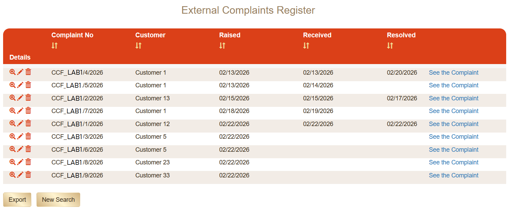
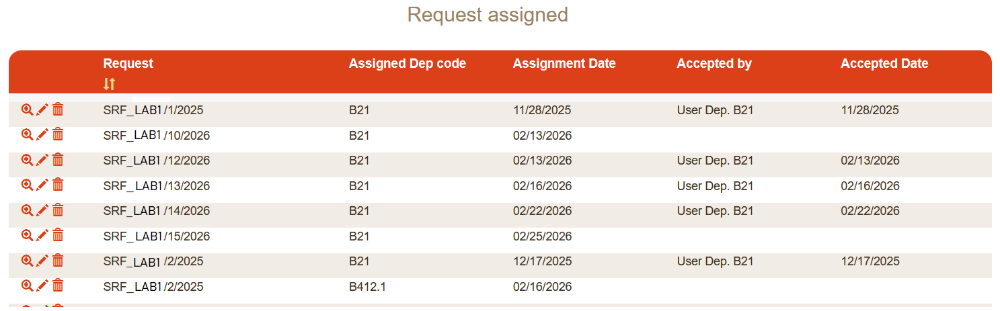
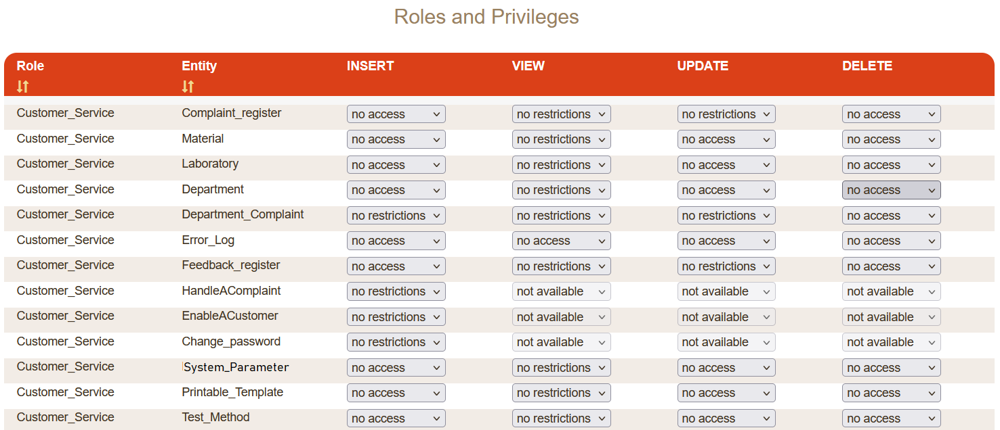

Sistema de Gestión de Nivel Industrial — Validación de Profundidad del Motor
Contexto
Este caso representa la validación a escala empresarial más sólida del modelo de ejecución de MySirt en un entorno operativo institucional.
Sistema de gestión empresarial institucional derivado de un modelo de dominio formal, definido en la DSL de MySirt como una instancia del execution meta-model y ejecutado por la Execution Engine. Actualmente desplegado en un entorno institucional de preproducción, tras una fase estructurada de formación de un mes.
Alcance estructural
- Modelo de dominio multi-entidad entre unidades operativas
- Control de acceso basado en roles con orquestación de workflows
- Aplicación de reglas de negocio embebidas en la DSL
- Generación de documentos y plantillas de reporting
- Soporte multi-base de datos (Oracle XE)
- Stack de ejecución Java 17 / Tomcat 9
Huella estructural
Tamaño del modelo declarativo y composición estructural del sistema de Customer Service.
La complejidad estructural se define declarativamente en el modelo y se compila en artefactos ejecutables en runtime.
Evidencia generativa
Huella de runtime medida producida a partir del modelo declarativo.
Ratio de generación en runtime
La personalización se limita a configuración de entorno, alineación de branding y ajustes específicos de UI. La lógica de negocio principal y los workflows estructurales permanecen model-driven.
Extractos detallados de la DSL y trazabilidad de regeneración disponibles bajo solicitud técnica formal.
Impacto en la productividad
Amplificación observada de la productividad del desarrollo derivada de la ejecución del meta-modelo.
Cada unidad de desarrollo manual ha producido un sistema ejecutable significativamente mayor, concentrando el esfuerzo humano en la lógica de dominio mientras el motor genera la estructura restante.

Vista de búsqueda estructurada de entidades generada a partir del modelo de dominio definido en DSL.
Validación operativa
- Formación institucional de un mes completada
- ~20 participantes activos durante la fase de validación
- Estructura organizativa multi-laboratorio
- Uso operativo diario previsto tras la entrada en producción
Factor de estrés del motor
El sistema experimentó refinamiento estructural iterativo durante la formación, permitiendo ajustes del dominio sin intervención manual en el código. La complejidad de los workflows y la orquestación de roles fueron validadas antes de la activación en producción.

Workflow de asignación a nivel departamental con transiciones de responsabilidad trazables.
Dimensión de validación del motor
Demuestra escalabilidad estructural, profundidad de workflow y modelado de dominio de nivel institucional antes del despliegue en producción.

Matriz de autorización a nivel de entidad generada a partir de reglas de acceso definidas en DSL.
Punto clave
Un sistema de información de nivel enterprise derivado de una definición formal compacta — refinado iterativamente sin reescribir código de aplicación.